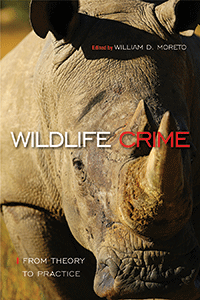

<HTML><head>
<meta name='robots' content='noindex,nofollow' /><script> (function(i,s,o,g,r,a,m){i['GoogleAnalyticsObject']=r;i[r]=i[r]||function(){  (i[r].q=i[r].q||[]).push(arguments)},i[r].l=1*new Date();a=s.createElement(o),  m=s.getElementsByTagName(o)[0];a.async=1;a.src=g;m.parentNode.insertBefore(a,m)   })(window,document,'script','//www.google-analytics.com/analytics.js','ga');   ga('create', 'UA-43183130-1', 'temple.edu');   ga('send', 'pageview'); </script><title>Edited by William D. Moreto: Wildlife Crime - Print</TITLE><link rel="stylesheet" href="../general.css" type="text/css"><SCRIPT LANGUAGE = JAVASCRIPT></SCRIPT></HEAD><BODY LINK="#3152A5" VLINK="#3152A5" ALINK=Gray BGCOLOR=White>
	
	<CENTER><P CLASS=intro><br>A comprehensive theoretical, empirical, methodological, and practical global overview of wildlife crime<br><br></P></CENTER>
	<br>&nbsp;<!--none//--><Table width="100%" border=0 cellspacing=5><tr><td width="175" align="center"></td><td>
	
	<h1 class = "booktitle">Wildlife Crime</h1> 
	<h1 class = "subtitle">From Theory to Practice</h1>
	<h3 class="author">Edited by William D. Moreto </h3>
	
	<p class="info">paper EAN: 978-1-4399-1472-4 (ISBN:1-4399-1472-9)</br>$37.95, Jul 18, <font color=#990033>Not Yet Published Preorder</font><br><p class="info">cloth EAN:  978-1-4399-1471-7 (ISBN:1-4399-1471-0)</br>$104.50, Jul 18, <font color=#990033>Not Yet Published Preorder</font><br><p class="info">Electronic Book EAN: 978-1-4399-1473-1 (ISBN:1-4399-1473-7)</br>$37.95, Jul 18, <font color=#990033>Not Yet Published Preorder</font><br><p class="info">330 pp, 6  x  9, 10&nbsp;figures 10 tables, 10 figs., 5 halftones, 2 maps</p></td></tr></table></P></td></tr></table><BR>
	
	<BLOCKQUOTE></BLOCKQUOTE>
	
	
	<P><p>The editors and contributors to this comprehensive volume examine topical issues from extinction to trafficking in order to understand the ecological, economic, political, and social costs and consequences of these crimes. Drawing from diverse theoretical perspectives, empirical and methodological developments, and on-the-ground experiences of practitioners, <i>Wildlife Crime</i> looks at how conservationists and law enforcement grapple with and combat environmental crimes and the profitable market for illegal trade. <br><br>Chapters cover criminological perspectives on species poaching, unregulated fishing, the trading of ivory and rhino horns, the adoption of conservation technologies, and ranger workplaces and conditions. The book includes firsthand experiences and research from China, Indonesia, Kenya, Madagascar, Morocco, Peru, Russia, South Africa, Tanzania, and the United States. The result is a significant book about the causes of and response to wildlife crime. <br><br> <i>Contributors include: Johan Bergenas, Avi Brisman, Craig Forsyth, Meredith Gore, Georg Jaster, Alex Killion, Kasey Kinnard, Antony C. Leberatto, Barney Long, Nerea Marteache, Gohar Petrossian, Jonah Ratsimbazafy, Gary Roloff, Viviane Seyranian, Louise Shelley, Rohit Singh, Nicole Sintov, Nigel South, Milind Tambe, Daan van Uhm, Greg Warchol, Rodger Watson, Rob White, Madelon Willemsen, and the editor</i><br>
		
	<P CLASS="top"><A HREF="#top">BACK TO TOP</A></P></p><P></P><P></b></p><p></p>
	
	<P><H2  class="inpageheading"><A NAME="author bio"></a>About the Author(s)</H2><p><b>William D. Moreto</b> is an Assistant Professor of Criminal Justice at the University of Central Florida.<br>
		
	<P CLASS="top"><A HREF="#top">BACK TO TOP</A></P></P></P>

<P><h2 class="inpageheading"><a name="subjects"></a>Subject Categories</h2> <p>
	<a href="http://www.temple.edu/tempress/law.html" target="_top">Law and Criminology</a> <br>
	<a href="http://www.temple.edu/tempress/animal_soc.html" target="_top">Animals and Society</a> <br>
	<a href="http://www.temple.edu/tempress/nature.html" target="_top">Nature and the Environment</a> <br>
	<a href="http://www.temple.edu/tempress/political.html" target="_top">Political Science and Public Policy</a> <br>
	<a href="" target="_top"></a> </p></P><P></P>

<P CLASS="top"><A HREF="#top">BACK TO TOP</A></P></td><td width=2%>&nbsp;</td><td width=5>&nbsp;</td></tr></table><BR><font face="Arial" size="1"><a href="copyright.html" OnMouseOver="window.status='Web Copyright Policy';return true;" OnMouseOut="window.status=''" TITLE="Web Copyright Policy">&copy;</a> 2018 <a href="http://www.temple.edu" target="new" OnMouseOver="window.status='Link to Temple University home page';return true;" OnMouseOut="window.status=''" TITLE="Link to Temple University home page">Temple University</a>. All Rights Reserved. This page: http://www.temple.edu/tempress/titles/2447_reg.html</font></BODY></HTML>      